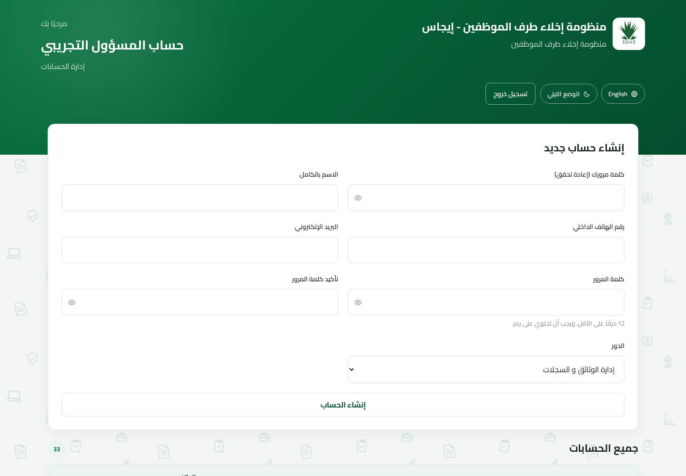

إدارة الحسابات · الإصدار ٢٫٠
دليل المسؤول
إنشاء وصيانة حسابات إدارة الوثائق والسجلات ومراجعي الإدارات.
إنشاء وصيانة حسابات إدارة الوثائق والسجلات ومراجعي الإدارات.
يدير المسؤول حسابات المستخدمين التشغيليين. لا يعالج المسؤول طلبات إخلاء الطرف ولا يراها، ولا يمكنه إدارة حسابات المسؤولين أو المسؤول الرئيسي.
| ١. الدخول وأمان كلمة المرور | الوصول |
| ٢. إنشاء الحسابات التشغيلية | المهمة اليومية |
| ٣. إعادة التعيين أو الحذف | الصيانة |
| ٤. المشكلات وقائمة المراجعة | مرجع |

شاشة الدخول. منتقي الحسابات التجريبية خاص بالتطوير وقد لا يظهر في الإنتاج.
إذا أعاد المسؤول الرئيسي لاحقًا تعيين كلمة مرورك (استعادة كلمة منسية، وهي عملية منفصلة عن إنشاء الحساب)، سجّل الدخول بإدخال كلمة المرور المؤقتة التي زوّدك بها المسؤول الرئيسي. لا تسمح هذه الكلمة المؤقتة إلا بفتح شاشة تعيين كلمة مرور جديدة، حيث تختار كلمة مرور دائمة جديدة من ١٢ حرفًا على الأقل تتضمن رمزًا. لا يمكن تخطي الخطوة.
إنشاء الحسابات وإعادة تعيينها وحذفها يتطلب كلمة مرورك الحالية مرة أخرى. أدخل كلمة مرورك أنت، لا كلمة المستخدم المتأثر.
استخدم رابط المساعدة بصفحة الدخول للحصول على بيانات اتصال المسؤول الرئيسي. الاستعادة بمساعدة المسؤول ولا ترسل المنظومة رابطًا بالبريد.

لوحة المسؤول: نموذج الإنشاء والحسابات الواقعة ضمن صلاحية المسؤول.
| الدور | الغرض | التكليف المطلوب |
|---|---|---|
| إدارة الوثائق والسجلات | إنشاء ومتابعة ومراجعة واعتماد الطلبات وحذفها بعد الاكتمال. | لا توجد إدارة |
| مراجع إدارة | مراجعة وتوقيع إدارة واحدة. | إدارة؛ ولبند IT تكليف إضافي |
| يمكن للمسؤول | لا يمكن للمسؤول |
|---|---|
| إنشاء/عرض/إعادة/حذف الحسابات التشغيلية | إدارة المسؤولين أو المسؤول الرئيسي |
| تكليف الإدارات وبنود IT الشاغرة | رؤية أو توقيع أو اعتماد أو حذف طلبات الإخلاء |
| مساعدة المستخدم في استعادة كلمة المرور | إعادة تعيين حسابه أو حذفه بنفسه |
| المشكلة | السبب المحتمل | الإجراء |
|---|---|---|
| رُفض إنشاء الحساب | حقل ناقص أو دور/إدارة غير صحيح أو كلمة ضعيفة أو بريد مكرر أو بند IT محجوز. | اقرأ الرسالة وصحح الحقل المحدد. |
| رُفضت كلمة المرور الحالية | كلمة التأكيد ليست كلمة المسؤول المسجل حاليًا. | أدخل كلمة مرورك الحالية أنت. |
| حساب مسؤول غير ظاهر | لا يدير المسؤول زملاءه المسؤولين. | تواصل مع المسؤول الرئيسي. |
| لا يرى المستخدم إلا شاشة كلمة جديدة | الحساب يستخدم كلمة مؤقتة. | أنشئ كلمة دائمة مطابقة للشروط. |
| بند IT غير متاح | يمتلكه حساب آخر. | راجع المالك الصحيح ولا تعدله إلا بعد الموافقة. |